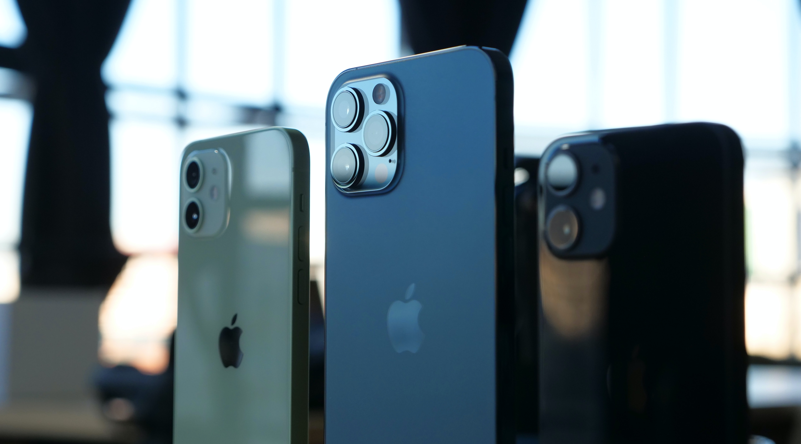
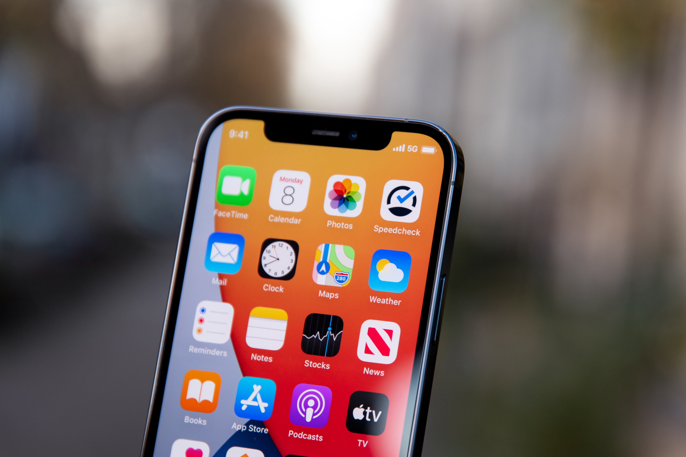

Брой преглеждания:
0
IPhone 13: Всичко което знаем за предстоящия флагман на Apple
Остават само няколко месеца до премиерата на следващия топ модел смартфон на Apple. С всеки изминал ден се появява все повече информация относно предстоящия флагман на "ябълката". В следващите няколко реда ще ви представя всичко, което е вече известно относно iPhone 13.
Дата на излизане:
Според известния анализатор на Apple Минг-Чи Куо, тази година компанията ще се върне към традицията и ще представят топмодела си през септември. Въпреки това може да има извести забавянияр поради недостига на полупроводници.
Варианти и цени:
Предполага се, че тази година от Apple отново ще пуснат 4 варианта на следващия iPhone, а именно iPhone 13 mini, iPhone 13, iPhone 13 Pro и iPhone 13 Pro Max.

iPhone 12
Новите устройства може да запазят цените от предходната iPhone 12 серия и така те ше започват от $699 за iPhone 13 mini и ще достигат до $1099 за iPhone 13 Pro Max.
Също така има теория, че следващите модели няма да са много по-различни от предходните, така че серията може да се нарича iPhone 12s.
120Hz ProMotion дисплей
Преди излизането на iPhone 12 миналата година, имаше слуховете, че топмодела ще има 120Hz дислей. Това обаче не се случи. Този път се предполага, че Apple най-накрая ще вгради такъв дисплей в два от моделите си, а именно iPhone 13 Pro и Pro Max.
Apple най-вероятно ще използва 120Hz LTPO дисплей, доставени от Samsung. Двата по-евтини модела най-вероятно ще ползват дисплей на BOE.
Според Макс Уайнбах, благодарение на LTPO OLED панелите, новата серия ще поддържа функцията always on display. Тя ще представлява нещо като по-олекотена версия на заключения екран. Там ще се показват часът, известията и процента заряд на батерията.
Touch ID
Apple изглежда не планира да премахне Face ID от слеващите си iPhone. Неотдавнашен слух твърди, че новите Iphone 13 ще разполагат със скенер за пръстови отпечатъци, вграден в дисплея, в допълнение към Face ID. Засега обаче тези слухове не са потвърдени от надеждни източници.
Минг-Чи Куо твърди, че Apple все още работи по вграждането на touc id в дислея и няма да го видим тази година, но може би ще вградят такова в бутона за захранване на следващия бюджетен модел - iPhone SE.
Камери
Според някои източници, iPhone 13 Pro ще предостави модернизирана ултраширокоъгълна камера. Това трябва да подобри нощната фотография. Предполага се, че цялата гама ще получи функцията от iPhone 12 Pro Max за стабилизация при смяна на сензора. Това се очаква да се отрази в качеството на снимките при ниска осветеност и да намали трептенията при запис на видео.
iPhone 12 и iPhone 12 Pro Max и iPhone 12 mini
Дизайн
iPhone 12 прорез
Предсоящите модели вероятно ще запазят размерите на предшествениците си, като дори е възможно кутията да е идентична.
Въпреки това има слухове, че прореза ще бъде по-малък. Това ще бъде постигнато, като от Apple изместят слушалката до ръба. Въпреки това, камерата ще бъде малко по-голяма.
Също така се очаква следващите устройства да предложат по-силен магнит за MagSafe зарядното. Може би ще бъде предложен и нов цвят - матово черно на мястото на стандартния цвят космическо сиво.
RAM, Чипсет, Памет
Очаква се iPhone да бъде представен с 5nm Apple A15 чип. За сега информацията относно A15 е оскъдна, но все пак се очаква той да предостави по-добра производителност. Телефонът също така може да разполага с модема Snapdragon X60 на Qualcomm за 5G.
Има слухове, че iPhone 13 ще се предлага с 1TB вътрешна памет, което е огромен скок, но засега това не е потвърдено от нито един надежден източник.
iOS 15
Информацията относно iOS 15 е все още доста оскъдна. След представянето на WWDC през юли, той ще бъде пуснат за разработчици и след това за бета тестъри. Стабилната версия трябва да бъде готова през есента и да започне да се предлага заедно с iPhone 13.
Снимки:Unsplash
Снимка на статията